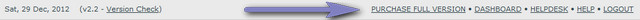
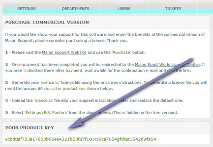

Documentation -


Documentation -

COMMERCIAL VERSION INCLUDES: - FREE upgrades for life - One time payment, NO subscriptions - ALL features unlocked and unlimited
How Do I Find My Product Key?
If you are using the none commercial version, in your admin area, click 'Purchase Full Version' to view your product key.


If you don`t see this link, access the following link in your admin area:
admin/index.php?p=purchase
Enable PHP Error Reporting
Maian Support is coded to not show PHP errors by default, but it can be a useful debugging tool if you are modifying any of the PHP templates and something isn`t working properly. Error reporting is set in the following files:
control/error-reporting.php
admin/control/error-reporting.php
E_ALL is generally recommended, but refer to the notes in your PHP.ini file for other levels. Error reporting should be off on production servers.
I`ve forgot my admin login details. Can I reset them?
Yes. If you have forgotten your admin user details, you can use the pass reset option to update all users. More information here.
How do I install ionCube?
For Maian Support to run your server must be compiled with support for the ionCube loaders. Your web hosting company will be able to help. If you run your own server, see the ionCube section for help.
All I see is a white page. Why?
The loading of the software has failed and the error reporting on the server is set to not display errors. Check your error logs. If nothing is there you can try enabling error logging as specified above.
Can you install the ionCube loaders for me?
As this requires root server access in some cases (ie, window servers), it may not be possible. I would recommend contacting your host first.
Will the system work with PHP6?
No, the system is not tested and encoded for PHP6.
Messages are being truncated with certain special characters. Is there a fix?
MySQL cannot properly handle four-byte characters with the default utf-8 charset up until version 5.5.3. The only workaround is to convert
these characters to a question mark. Not fancy, but it should prevent the posts from being truncated. To enable this edit the 'control/user-defined/defined2.inc.php' file.
Set the 'CONVERT_BAD_MULTIBYTE_CHARS' value to 1.
How are tickets and disputes different?
A ticket is a standard communication between the person who opened the ticket and admin. A dispute can be seen by multiple users and admin. So, for example, lets say you run a games site and 2 users are in dispute. User 1 can open a ticket and user 2 can then be added to the same ticket via the dispute system. Both users can then see each others replies.
How do I create a dispute?
To create a dispute from a ticket, click to view the ticket and then click 'Create Dispute' from the top bar, this turns the ticket into a dispute. You then have to add other users to the dispute. See the 'Tickets' menu and view the dispute pages.
Can I upgrade from a previous version older than v2.0?
Sorry, this isn`t possible.
Can I change the text in the software and add my own wording?
Yes, see the language section.
I would like to add my own logos. Is this possible?
Yes of course, just overwrite the following images with your own:
templates/images/logo.png
admin/templates/images/logo.png
404/400 etc Error messages are pretty bland. Can I create my own?
Yes, just edit the files in the following folders:
control/system/response-headers/*
admin/control/system/response-headers/*
Can I edit the PHP files?
All files may be edited, except the files in the following directories:
control/system/core/*
admin/control/system/core/*
You must NOT edit any of these files or the system will fail to load.
Can I remove the website name from the e-mail subjects?
Yes, search the following folder:
templates/language/english/*
You are looking for the following string:
[{website}]
Remove all instances of this string EXACTLY as you see it, so with brackets and braces.
Which files are encoded?
The main 'index.php' files and all files in the 'core' folders. Most of the files are not encoded and you can modify them as you wish. Note that removing some licence checks may prevent the system from loading.
Can I load custom code from the main index.php files?
Yes, see the Template Integration section.
Can I change the * symbol that appears for required form fields?
Yes, edit the 'control/user-defined/defined2.inc.php' file and the 'CUSTOM_REQUIRED_MARKER' option.
Can I change the default ordering for the tickets/disputes view?
Yes, edit the 'control/user-defined/defined2.inc.php' file and the 'ALL_TICKETS_ORDER/ALL_DISPUTES_ORDER' options.
Can I use multiple languages at the same time?
Yes, see the note on the languages page.
Can I integrate the layout into my own site design?
Yes, you`ll need to edit all the template files in the 'templates' folder. Click here for more help.
Ticket numbers are prefixed with 5 zeros as default. Can I change this?
Yes, edit the 'control/user-defined/defined.inc.php' file. Increase or decrease the value of 'MIN_DIGITS_TICKETS'.
Can I disable the e-mail notification when someone changes their password?
Yes, edit the 'control/user-defined/defined.inc.php' file. Set the 'CHANGE_PASS_NOTIFICATION' value to 0.
Invalid characters are causing problems in file attachment uploads. Can I fix this?
If this is a problem, it is recommended you rename attachments, which is set in your admin settings
Can I have the admin ticket comments appear in reply text files?
Yes, use {COMMENTS} in the following files:
templates/language/english/admin-email/ticket-reply.txt
templates/language/english/admin-email/ticket-reply-and-merged.txt
templates/language/english/admin-email/dispute-reply.txt
templates/language/english/admin-email/dispute-reply-and-merged.txt
Can I add custom mail headers?
Yes, you can add custom mail headers in the following file.
control/custom-mail-headers.php
Can I change the voting percentage decimal places?
Yes, edit the 'control/user-defined/defined.inc.php' file. Increase or decrease the value of 'VOTING_DECIMAL_PLACES'.
Is it possible to increase memory limit and timeout limits for imap?
Yes, edit the 'control/user-defined/defined.inc.php' file. Increase or decrease the values of 'IMAP_MEMORY_OVERRIDE' & 'IMAP_MEMORY_OVERRIDE'.
Can I strip HTML from tickets that are received via imap?
Yes, edit the 'control/user-defined/defined.inc.php' file. Set the 'STRIP_HTML_IMAP' value to 1.
Can I set the timezone in the software to my own?
Yes, this should be done on installation. Edit the 'control/connect.inc.php' file. Change the value for 'DEFAULT_TIMEZONE';
Can I remove the version check link in the admin area?
Yes, edit the 'admin/control/user-defined/defined2.inc.php' file. Set the 'DISPLAY_SOFTWARE_VERSION_CHECK' value to 0.
My server requires output from the cron job. Can this be enabled?
Yes, edit the 'control/user-defined/defined.inc.php' file. Set the 'DISPLAY_IMAP_CRON_OUTPUT' value to 1.
Can I change the default Url parameter for the cron for security?
Yes. Default is 'pipe'. ie: pipe=XX. To change pipe, edit the 'control/user-defined/defined.inc.php' file and change the 'IMAP_URL_PARAMETER' value.
Can I disable the help tips in the admin area?
Yes, edit the 'admin/control/user-defined/defined.inc.php' file. Set the 'HELP_TIPS' value to 0.
Can I change the date picker to be RTL (right to left)?
Yes, edit the $msg_cal3 option in the 'templates/language/*/lang2.php' file and set it to 'true'.
Can I add additional options to the jQuery date picker?
Yes, edit the 'admin/templates/date-picker.php' file.
Can I disable the homepage sideboxes in the admin area?
Yes, edit the options in the 'admin/control/user-defined/defined2.inc.php' file.
Can I change the HTML tag parameters in admin template files?
Yes, edit the 'admin/control/user-defined/defined.inc.php' file. Edit the 'HTML_HEADER' value.
Passwords generated are 6 chars. Can I increase or decrease this?
Yes, edit the 'control/user-defined/defined.inc.php' file. Change the value for 'PASS_CHARS'.
Can I disable MySQL errors for security?
Yes, edit the 'control/connect.inc.php' file. Set the 'ENABLE_MYSQL_ERRORS' value to 0. You should also add a default message by editing 'MYSQL_DEFAULT_ERROR'.
Can I adjust pop up div width and heights in the admin area?
Yes, all pop up sizes are set in the 'admin/control/user-defined/defined.inc.php' file.
Can admin upload more attachments than visitors?
Yes. An override is set in the 'admin/control/user-defined/defined.inc.php' file. Change the value for 'ADMIN_ATTACH_BOXES_OVERRIDE'.
Can I disable the notification popups if I enable/disable dispute post privileges?
Yes, edit the 'admin/control/user-defined/defined2.inc.php' file. Set the 'DISPUTE_POST_PRIVILEGE_CONFIRMATION' value to 0.
Can I stop the system re-directing visitors to tickets on login?
Yes, edit the 'control/user-defined/defined2.inc.php' file. Change the value of 'AUTO_VIS_TICKET_REDIRECT' to 0.
Can I stop the system re-directing users to ticket on login?
Yes, edit the 'admin/control/user-defined/defined.inc.php' file. Change the value of 'REDIRECT_TO_TICKET_ON_LOGIN' to 0.
Can I have HTML formatted e-mails?
Yes, edit the 'control/user-defined/defined.inc.php' file. Change the value of 'HTML_EMAILS' to 1. Remember that you`ll need to reformat the e-mail templates and add HTML line breaks or else the code will be on one line.
Can I remove the Maian Support links in e-mails?
Sorry, not in the free version. The commercial upgrade removes this option.
How much do I have to pay for upgrades?
Nothing at all. All future upgrades are FREE of charge.
Ok, I`ve purchased a licence. What do I do now?
Firstly, go to the Maian Script World Licence Centre and log in with the username/password sent to you in the e-mail you received after purchase. If you
didn`t receive this e-mail, please contact me via the Maian Support website.
Once you have logged in, use the options provided to generate your licence. Your new licence file will be included in a zip file along with a readme file. You should
replace the default .lic file with your new one. This will unlock the free feature restrictions.
How do I use the imap functions and make e-mail piping work?
Please see the imap section.
Can I ban visitors from accessing the system?
There are no e-mail blocking options in Maian Support, most visitors blocked will simply use another e-mail address, so its fairly pointless. You can try blocking their IP address via .htaccess (if your server supports it), or via some other method.
Can I block a visitor from accessing their ticket portal?
Yes, via the portal options in your admin area. This was added in 2.1
I have some great suggestions to make the system better. Can I let you know?
Yes please. Use the contact option on the Maian Support website.
Can you recommend a good web host?
There are lots of good web hosting companies around. Try a search on Google. Read what other people say.
Can I use some fancy coding to hide your footer links?
This is against the scripts licence. Dishonesty is a bad trait.
Can I disable the admin entry log?
Yes, edit the 'admin/control/user-defined/defined.inc.php' file. Change the value of 'ENABLE_ENTRY_LOG' to 0.
Can I restrict certain users from being logged in the entry log?
Yes, edit the 'admin/control/user-defined/defined.inc.php' file. Change the value of 'ENTRY_LOG_RESTRICTION'. See the notes for more information.
Can I disable the message option in admin for users to contact other users?
Yes, edit the 'admin/control/user-defined/defined.inc.php' file. Change the value of 'ENABLE_MESSENGER' to 0.
Help Tips
The same or additional information may be provided by hovering your cursor over the  image next to each heading in the admin area if applicable.
image next to each heading in the admin area if applicable.